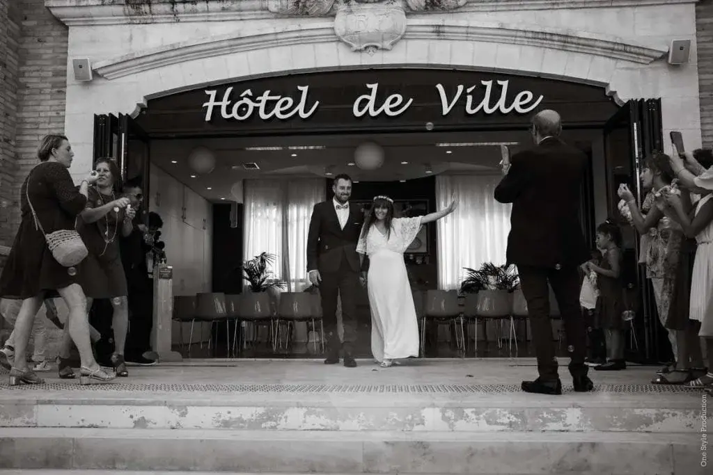
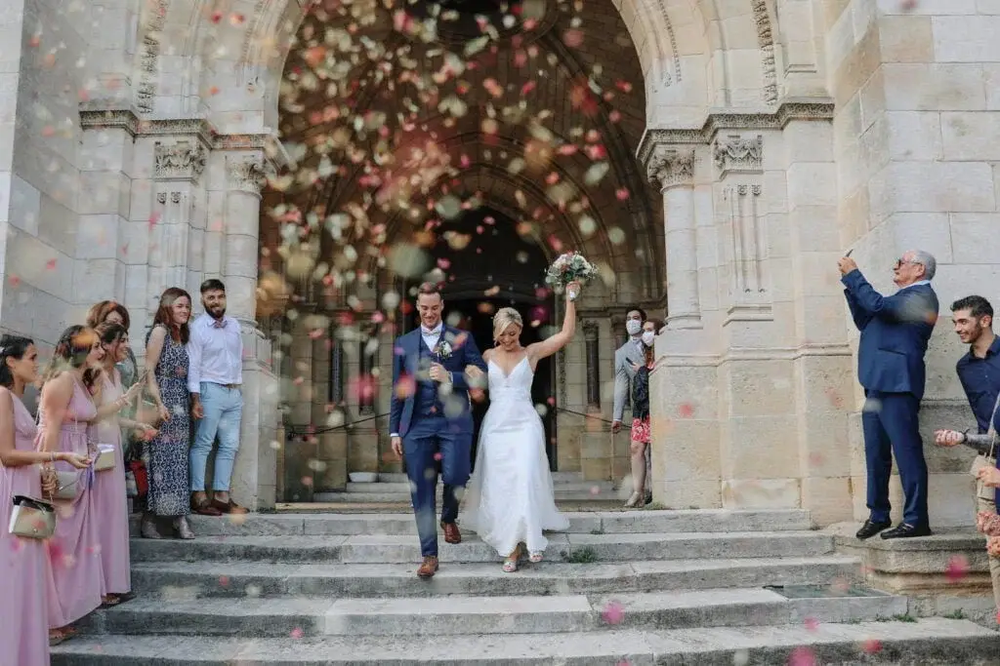
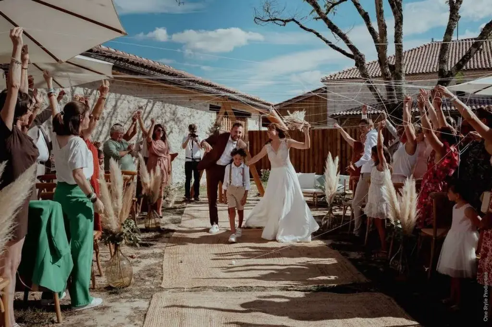
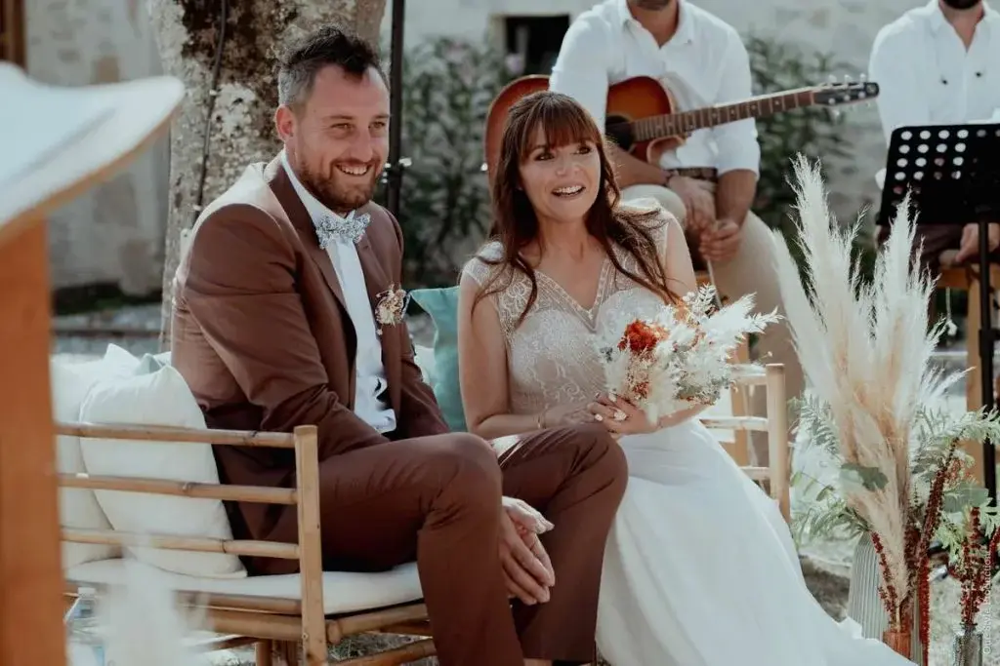

Getting married soon? What wonderful news! All that's left is to choose the ceremony or ceremonies that will shape your wedding. To help you understand what each involves, discover them now and choose the one that best suits your wishes.
The civil ceremony
The civil wedding, held at the town hall, is the only official celebration that formally unites you in the eyes of the French state. It takes place in the presence of the mayor or a registrar of your town, the only people authorised to marry you officially. Without going to the town hall and hearing the reading of the articles of law on marriage, you are not legally married.
Town hall ceremonies are often short, leaving little room for festivities. That's why you might add a religious or symbolic ceremony on top of the civil one.

The religious ceremony
A religious wedding is for couples of faith. Note that it has no legal value in the eyes of the law, only within your beliefs. Choose your place of worship according to your religion; the ceremony very often requires a period of religious preparation. On the big day you'll follow rituals and a whole protocol preparing you for married life. More personal and longer than the civil ceremony, it is always more moving.

The symbolic ceremony

Although it has no legal value, this form of ceremony suits you if you don't want a religious wedding or simply want to say "yes" in a personal, free way. Designed around the couple, it is shaped by readings, speeches and rituals you choose in advance. It can be led by anyone close to you, so make the most of it! Or choose a professional officiant, who will tell your story and set the tone of the ceremony!

Whether you choose a civil, religious and/or symbolic ceremony, don't hesitate to get in touch; I'd be delighted to take care of the planning.
Lovely Day Event offers several services
Wedding planning
I step in at every stage of your preparations and guide you through your choices, bringing ideas and suggestions so that your wedding looks like no one but you.
On-the-day coordination
I will be the conductor of your day, managing the suppliers, the set-up of your decor and the smooth running of this beautiful day.
Wedding design
Creative and passionate, I am a certified Wedding Designer and I create a scenographic atmosphere that matches the theme of your wedding. Styling is included in Signature, or offered as an add-on to on-the-day coordination.